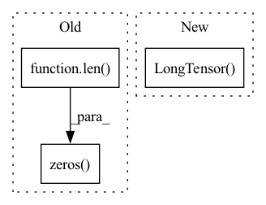

Pattern ID :21745
Before Change
scope.append((total_atoms, n_atoms))
total_atoms += n_atoms
total_bonds = len( all_bonds)
max_num_bonds = max(len(bonds) for bonds in in_bonds)
fatoms = torch.stack(fatoms, dim=0)
fbonds = torch.stack(fbonds, dim=0)
agraph = torch.zeros(total_atoms, max_num_bonds, dtype=torch.long)
bgraph = torch.zeros( total_bonds, max_num_bonds, dtype=torch.long)
for a in range(total_atoms):
for i, b in enumerate(in_bonds[a]):
agraph[a, i] = bAfter Change
// Map each bond to all bonds going into that bond"s start atom
bgraph = [[]] + [[bond if all_bonds[bond][0] != a2 else 0 for bond in in_bonds[a1]] for a1, a2 in all_bonds[1:]]
bgraph = torch.LongTensor( [bonds + [0] * (max_num_bonds - len(bonds)) for bonds in bgraph]) // zero padding
return fatoms, fbonds, agraph, bgraph, scope
In pattern: SUPERPATTERN
Frequency: 3
Non-data size: 3
Instances Fragment ID: 69392499
Project Name: aamini/chemprop
Commit Name: 64f98d60d13bc4bd7131ea4453b03163503cce0c
Time: 2018-10-02
Author: swansonk.14@gmail.com
File Name: mpn.py
M Class Name: AnonimousClass
N Class Name: AnonimousClass
M Method Name: mol2graph(2)
N Method Name: mol2graph(2)
M Parent Class:
N Parent Class:
M File Name: mpn.py
N File Name: mpn.py
M Start Line: 143
M End Line: 240
N Start Line: 222
N End Line: 232
Before Change
t, avg_acc = ACC(loc_pred[0], loc_true)
return t, avg_acc
else:
tot_list = np.zeros(len( loc_true) , dtype=int)
for i in range(topK):
t, avg_acc = ACC(loc_pred[i], loc_true)
tot_list = tot_list + t
return tot_list, np.mean(tot_list < topK)After Change
res: (batch_size * 1)
"""
assert topK > 0, "top-k ACC评估方法：k值应不小于1"
loc_pred = torch.LongTensor( loc_pred)
val, index = torch.topk(loc_pred, topK, 1) // 使用 torch 的 topk 来实现
index = index.numpy()
res = []
for i, p in enumerate(index): Fragment ID: 69392497
Project Name: libcity/bigscity-libcity
Commit Name: 51403f094fe439b6470cf8b36665bff72f09fddd
Time: 2020-12-23
Author: 33283819+WenMellors@users.noreply.github.com
File Name: trafficdl/evaluator/eval_funcs.py
M Class Name: AnonimousClass
N Class Name: AnonimousClass
M Method Name: top_k(3)
N Method Name: top_k(3)
M Parent Class:
N Parent Class:
M File Name: trafficdl/evaluator/eval_funcs.py
N File Name: trafficdl/evaluator/eval_funcs.py
M Start Line: 54
M End Line: 64
N Start Line: 62
N End Line: 72
Before Change
tot_item_num = self.dataset.num(iid_field)
users = np.zeros(len( uid2items) , dtype=np.int64)
new_inter_num = 0
pos_len_list = []
user_idx_list = []After Change
user_df = pd.DataFrame({uid_field: users})
user_tensor = self._dataframe_to_interaction(self.join(user_df))
return user_tensor, torch.LongTensor( pos_idx) , torch.LongTensor(used_idx),\
pos_len_list, user_len_list, neg_len_list
def __next__(self): Fragment ID: 69392492
Project Name: rucaibox/recbole
Commit Name: efaf2d8c84961b5042c0d42e08e56a59f064f267
Time: 2020-08-05
Author: houyupeng@ruc.edu.cn
File Name: data/dataloader.py
M Class Name: GeneralFullDataLoader
N Class Name: GeneralFullDataLoader
M Method Name: _neg_sampling(2)
N Method Name: _neg_sampling(2)
M Parent Class: GeneralGroupedDataLoader
N Parent Class: GeneralGroupedDataLoader
M File Name: data/dataloader.py
N File Name: data/dataloader.py
M Start Line: 336
M End Line: 370
N Start Line: 341
N End Line: 377